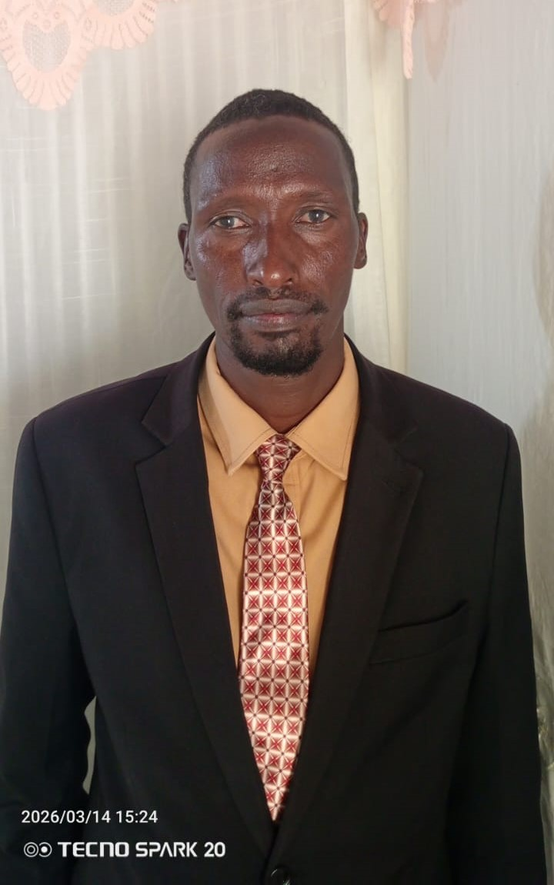
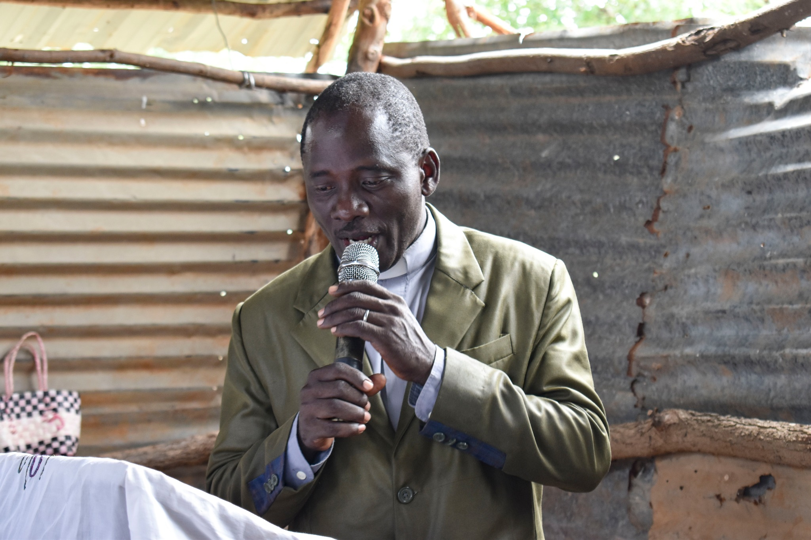
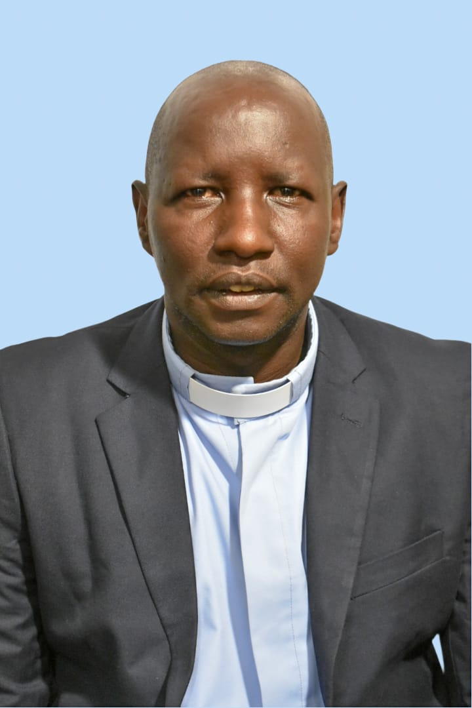
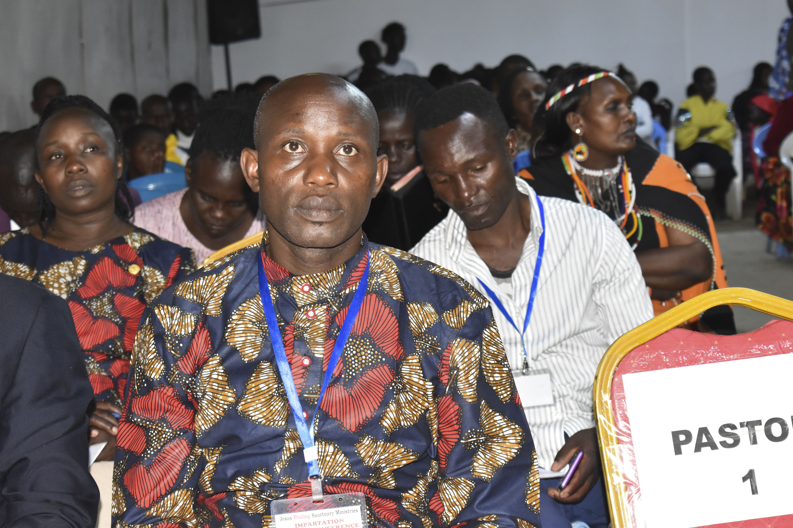

Our National Leaders
Meet the dedicated leaders guiding JHSM International.

Bishop Dr Simon Lemarimbe
Head Bishop of JHSM Int'l & Mt Kenya Region Rep
A Life of Faith, Vision and Service
Bishop Lemarimbe is a visionary leader who has dedicated his life to serving God and the church. With a strong foundation in theology and a heart for pastoral care, he has led JHSM International with wisdom and compassion. His leadership style is characterized by humility, integrity, and a deep commitment to the spiritual growth of believers.

Reverend Joshua Kerika Olguris
General Secretary & Kajiado Region Overseer
A Servant Leader
Reverend Kerika is a devoted servant of God and a passionate leader who currently serves as the General Secretary of JHSM International as well as the Kajiado Region Overseer. With a heart deeply committed to ministry and administration, he plays a central role in guiding the organization’s vision and ensuring its smooth operation. In his capacity as General Secretary, he oversees coordination of programs, manages official communication, and supports the spiritual and structural growth of the ministry. His diligence, wisdom, and organizational skills have made him a reliable pillar within the leadership team, helping JHSM International remain focused on its mission of impacting lives through the gospel.

Dr John Wanjohi
Assistant General Secretary
Committed To The Call
Pastor Mary Letiwa
General Treasurer
Faithful in Service
Pastor Mary Letiwa manages the ministry's financial stewardship with transparency, diligence and strong accountability.
Board Members

Rev Susan Lemarimbe

Rev Daudi Letooyia

Rev Peter Mutua

Pst Grace Ayub

Rev Bosco Sambu
National Ministry Representatives
Pastor Grace Ayub
Neema Women's Representative
Pastor Grace Ayub is a dedicated and passionate leader who serves as the Neema Women's Representative for JHSM International. With a heart deeply committed to empowering women and fostering spiritual growth, Pastor Grace plays a vital role in advocating for the needs and aspirations of women within the ministry. Her leadership is marked by compassion, vision, and a strong desire to see women thrive in their faith and in their roles within the church. Through her work, she seeks to create opportunities for women to grow spiritually, develop their gifts, and actively participate in the mission of JHSM International.

Pastor Peter Letowon
GOF Representative
Pastor Peter Letowon is a faithful and dedicated leader who serves as the GOF Representative for JHSM International. With a heart committed to ministry and a passion for serving others, Pastor Peter plays a crucial role in representing the interests of the GOF (Generation Of Fire) within the ministry. His leadership is characterized by integrity, humility, and a strong desire to see the ministry thrive and make a positive impact in the lives of many. Pastor Peter finds great joy in being part of JHSM International and is deeply fulfilled by the opportunity to contribute to the growth and success of the ministry. For him, serving in this role is not just a responsibility, but a calling that allows him to witness the power of faith in action and to be a source of encouragement and support for others.
Reverend Peter Mutua
Eastern Region Representative
Reverend Peter Mutua is a dedicated and passionate leader who serves as the Eastern Region Representative for JHSM International. With a heart deeply committed to ministry and a strong desire to see the ministry thrive, Reverend Mutua plays a crucial role in representing the interests of the Eastern Region within the ministry. His leadership is marked by integrity, humility, and a genuine passion for serving others. Reverend Mutua finds great joy in being part of JHSM International and is deeply fulfilled by the opportunity to contribute to the growth and success of the ministry. For him, serving in this role is not just a responsibility, but a calling that allows him to witness the power of faith in action and to be a source of encouragement and support for others.

Reverend Luka Lemartile
Samburu Region Representative
Reverend Luka Lemartile is a faithful and dedicated leader who serves as the Samburu Region Representative for JHSM International. With a heart committed to ministry and a passion for serving others, Reverend Luka plays a crucial role in representing the interests of the Samburu Region within the ministry. His leadership is characterized by integrity, humility, and a strong desire to see the ministry thrive and make a positive impact in the lives of many. Reverend Luka finds great joy in being part of JHSM International and is deeply fulfilled by the opportunity to contribute to the growth and success of the ministry. For him, serving in this role is not just a responsibility, but a calling that allows him to witness the power of faith in action and to be a source of encouragement and support for others.

Reverend Jackson Nyaribo
Nyanza Region Representative
Reverend Jackson Nyaribo is a dedicated and passionate leader who serves as the Nyanza Region Representative for JHSM International. With a heart committed to ministry and a passion for serving others, Reverend Jackson plays a crucial role in representing the interests of the Nyanza Region within the ministry. His leadership is characterized by integrity, humility, and a strong desire to see the ministry thrive and make a positive impact in the lives of many. Reverend Jackson finds great joy in being part of JHSM International and is deeply fulfilled by the opportunity to contribute to the growth and success of the ministry. For him, serving in this role is not just a responsibility, but a calling that allows him to witness the power of faith in action and to be a source of encouragement and support for others.

Reverend Chrispus Mutali
Nairobi Region Representative
Reverend Chrispus Mutali is a faithful and dedicated leader who serves as the Nairobi Region Representative with diligence and passion. In this role, he provides spiritual oversight and strategic coordination for ministry activities across the Nairobi region, ensuring that the vision and mission of the organization are effectively carried out. He works closely with pastors, church leaders, and members to strengthen fellowship, promote unity, and encourage consistent spiritual growth within the congregations under his care.

Pastor Joel Ayub
Eldoret Region Representative
Pastor Joel Ayub is a dedicated and passionate leader who serves as the Eldoret Region Representative for JHSM International. With a heart deeply committed to ministry and a strong desire to see the ministry thrive, Pastor Joel plays a crucial role in representing the interests of the Eldoret Region within the ministry. His leadership is marked by integrity, humility, and a genuine passion for serving others. Pastor Joel finds great joy in being part of JHSM International and is deeply fulfilled by the opportunity to contribute to the growth and success of the ministry. For him, serving in this role is not just a responsibility, but a calling that allows him to witness the power of faith in action and to be a source of encouragement and support for others.